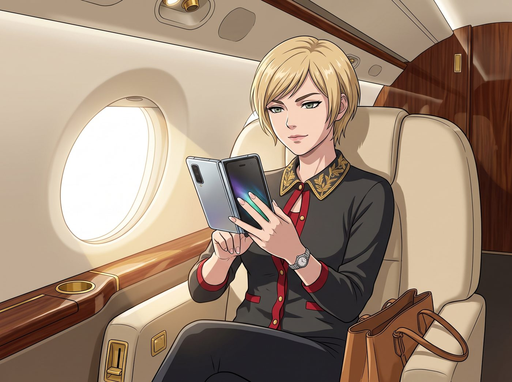
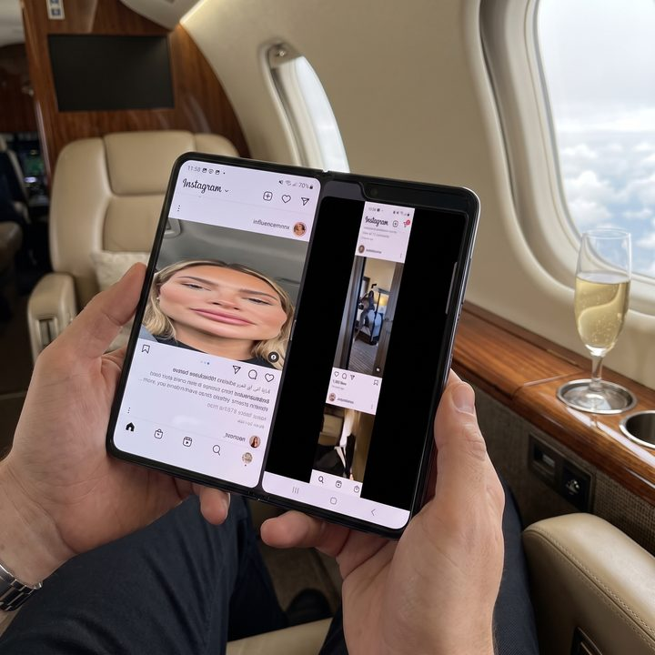
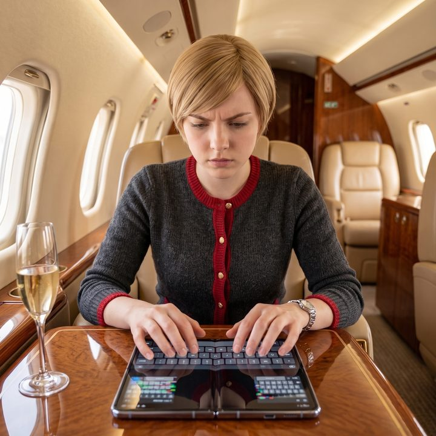

為愛彎腰的智商稅



灣流私人飛機的頭等艙真皮座椅上，Victoria 帶著一種精心計算過的、漫不經心的優雅，從包裡掏出了一台剛在舊金山旗艦店買到的、售價高達兩千五百美金的初代折疊螢幕智慧型手機。
她故意在安靜的機艙裡停頓了半秒，然後用兩根貼著精緻法式美甲的手指，以一個極度瀟灑的姿勢將手機像書本一樣展開。
「啪嗒。」
清脆的機械鉸鏈聲在機艙內迴盪，宣告著老錢階級對矽谷最前沿科技的無縫接入。Victoria 端起香檳，微微靠在椅背上，準備迎接眾人對這塊充滿未來感的巨大柔性螢幕的驚嘆。
一分鐘過去了。沒有驚嘆，只有一陣肆無忌憚的爆笑。
一、扁平的發麵饅頭
「老天啊，Victoria！妳的社群軟體是被壓路機輾過了嗎？！」
Chloe 叼著一根牛肉乾，整個人趴在座椅靠背上，指著 Victoria 手裡那塊昂貴的螢幕笑得前仰後合。
Victoria 高傲的表情瞬間僵住了。她低下頭，這才發現這台被科技媒體吹捧上天的初代折疊機，其軟體生態簡直是一場災難。由於絕大多數App根本沒有針對這塊奇怪的比例螢幕進行適配，某社群軟體的介面被野蠻地橫向拉伸，網紅們的精緻臉蛋全變成了扁平的發麵饅頭；而旁邊的另一個社群軟體則在螢幕兩側留下了兩道寬達三公分的巨大黑邊，看起來就像個設計失敗的數位墓碑。
「這叫前衛的視覺延展性！妳們這些還在用直板手機的窮人根本不懂！」Victoria 咬牙切齒地試圖挽回尊嚴，手指在螢幕上飛快地滑動，試圖切換到一個看起來正常一點的應用程式。
但悲劇接踵而至。當她打開鍵盤準備打字時，虛擬鍵盤被暴力從中間劈成兩半，分別縮在螢幕的左右下角。名媛的大拇指必須以一種極度扭曲的姿勢跨越那道位於螢幕正中央、肉眼可見的深深摺痕，才能勉強打出一個單字。
Max 默默地舉起寶麗來相機，對著那塊慘不忍睹的拉伸螢幕和那條深深的物理摺痕按下了快門。
「這簡直是數位時代的裹腳布。」Max 看著吐出來的底片，毫不留情地進行了文青式的降維打擊，「花兩千五百美金，買一個中間帶凹槽、會把所有照片都變成哈哈鏡的塑膠玩具。我那台五十年前生產的雙眼反光相機，取景器都比妳這個清晰。承認吧，Victoria，這就是頂級的智商稅。」
二、替資本家承擔的沉沒成本
一直坐在對面安靜看書的實習生 Lily，這時輕輕合上了手裡的判例彙編。她推了推反光的圓框眼鏡，目光落在那台折疊手機上，眼神裡閃爍著一種看待不良資產的冰冷理性。
「Victoria 學姐，從消費者權益與企業風險轉嫁的角度來看，Max 學姐對智商稅的定義是非常精準的。」
Lily 軟糯的聲音在機艙裡響起，開始了一場殘酷的商業邏輯解剖：「這家科技巨頭為了搶佔硬體風口，在軟體開發工具包完全沒有被第三方開發者廣泛接受的情況下，強行將這台Beta版測試原型機推向了消費市場。您支付的高昂溢價，本質上是在替他們承擔研發失敗的沉沒成本。」
Lily 伸出一根白皙的手指，指著手機螢幕邊緣那一層看起來有些起泡的塑膠膜：「更惡劣的是其保固條款。根據我剛才用兩分鐘掃描的用戶協議，如果您因為強迫症撕掉了那層看起來像包裝膜的聚醯亞胺柔性層，您的螢幕將會當場報廢，且完全不在保固範圍內。這是一份極度不平等的霸王條款，我可以立刻起草一份針對其欺騙性硬體設計的集體訴訟意向書。」
Victoria 握著折疊手機的手開始微微發抖。她原本只是想不露聲色地炫耀一下自己的購買力，結果現在不僅被嘲笑買了個殘廢的玩具，還被實習生定性為替資本家承擔研發成本的冤大頭。這對 Chase 財團繼承人來說，簡直是智商和階級的雙重侮辱。
「我……我只是買來當作一個高科技的小鏡子用而已！誰要用它來回郵件了？！」Victoria 死鴨子嘴硬地「啪」一聲把手機合上，試圖掩飾自己那因為錯誤打字而快要抽筋的大拇指。
三、為愛彎腰的浪漫詮釋
這時，放在小桌板上的平板電腦亮了起來，是 Kate 從二號車廂發來的視訊通話請求。畫面接通後，小天使正繫著圍裙，背景是溫暖的廚房，手裡端著一杯剛泡好的洋甘菊茶，看著鏡頭這頭 Victoria 氣急敗壞地把那台昂貴的手機塞進包裡，眼神裡充滿了溫柔的理解。
「Victoria，妳不要生氣呀。」Kate 隔著螢幕輕聲說道，笑容聖潔得宛如在教堂裡佈道，「這台手機其實很感人呢。妳看，它本來是一塊堅硬的螢幕，但為了能更好地被妳握在手裡，它努力地彎下了自己的腰，甚至在心裡留下了一道深深的摺痕。這就像是一個人為了適應這個世界而做出的妥協與柔軟呀。雖然它現在看東西有些變形，但這份願意為了妳而折疊起來的心意，難道不比那些永遠筆挺、冷冰冰的手機更充滿愛嗎？」
聽著大天使將技術不成熟導致的鉸鏈缺陷解讀為為了愛而彎腰的偉大妥協，Chloe 剛喝進嘴裡的香檳差點噴出來。
而 Victoria 則默默地端起那杯洋甘菊茶，絕望地閉上了眼睛。她發誓，等飛機一降落，她就會立刻把這台充滿了愛與妥協、連社群軟體都打不開的兩千五百美金智商稅，直接扔進二號車廂外面的太平洋裡。